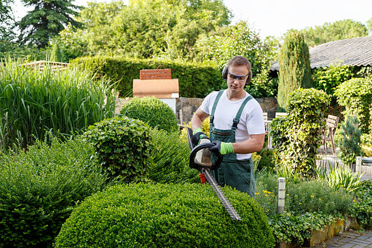

Cantinho das Ferramentas

Ferramentas Essenciais
No nosso Cantinho das Ferramentas, você encontra todos os utensílios para cuidar do seu jardim com facilidade. Desde pás e regadores até tesouras de poda e luvas, tudo selecionado para qualidade e durabilidade. Transforme seu espaço verde em um verdadeiro refúgio com as ferramentas certas.
Pá de Jardim
Perfeita para cavar e plantar mudas.
R$ 45,90Tesoura de Poda
Ideal para aparar galhos e flores.
R$ 59,90Regador
Distribui água uniformemente sem danificar as folhas.
R$ 39,90Luvas
Protege as mãos durante o manuseio de plantas.
R$ 29,90© 2025 Entre Folhas. Todos os direitos reservados.